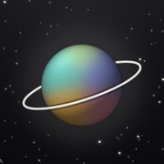

AstrojDestek
Astroj; doğum haritanı, her günün küresini ve sevdiklerinle aranızdaki gökyüzünü telefonunda hesaplayan bir astroloji uygulamasıdır. Hesap yok; bilgilerin yalnızca telefonunda kalır.
Bir sorun ya da önerin mi var? Bize yaz: astroj.support@gmail.com
Sık sorulanlar
Aboneliğimi nasıl iptal ederim?
iPhone’da Ayarlar → adın → Abonelikler → Astroj; Android’de Google Play → profil → Ödemeler ve abonelikler → Abonelikler → Astroj. Dönem bitimine kadar Astroj Plus açık kalır.
Yeni telefona geçtim, Astroj Plus görünmüyor.
Aynı Apple veya Google hesabıyla giriş yaptıktan sonra Profil → “Satın alımları geri yükle”ye dokun.
Günlüğüm ve eklediğim kişiler yeni telefona geçer mi?
Bu bilgiler yalnızca telefonunda saklandığı için bizde kopyası yoktur. Profil → “Günlüğü dışa aktar” ile günlüğünü bir dosya olarak saklayabilirsin.
Doğum saatimi bilmiyorum.
Sorun değil: “Bilinmiyor” seçersen Astroj saate bağlı kısımları (Yükselen, evler) göstermez, geri kalanını yine hesaplar.
Support
Astroj calculates your birth chart, each day’s orb and the sky between you and the people you love, on your phone. No account; your information stays on your device.
Questions or ideas? Write to astroj.support@gmail.com.
Cancel the subscription in your App Store or Google Play account settings; restore it on a new phone from Profile → “Satın alımları geri yükle” (Restore purchases).